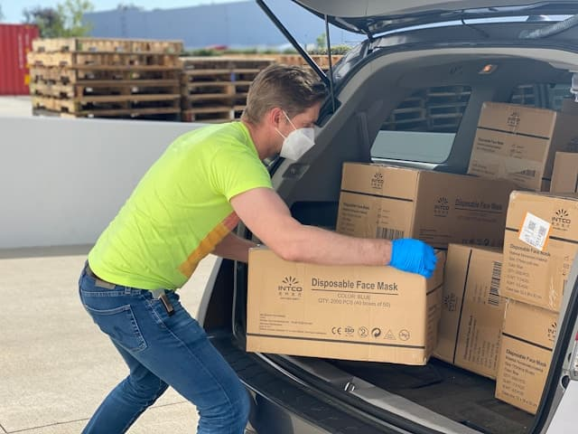
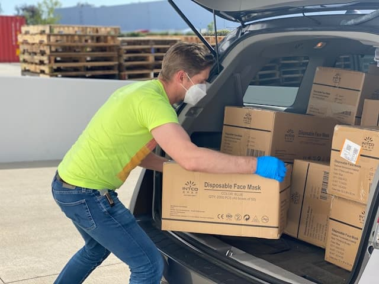

Welcome to Service Project Connect!
We're excited to help you get involved in your community! Here you can explore service opportunities, sign up to volunteer, or register new projects that make a difference.
Browse ProjectsHow to Volunteer
Volunteering is easy! Just browse the list of upcoming service projects on our Projects page. When you find one you’re interested in, click the "Volunteer" button. This will take you to a simple form where you can sign up and let the project organizers know you’re ready to help. It's a great way to connect with your community and make a positive impact!
How to Register a Project
If you have a service project idea you'd like to share, we'd love to help you get it off the ground. Visit our Register a Project page to submit details about your project, including the name, date, category, and description. Once submitted, we'll add your project to the site so volunteers can find it and get involved!
Get Involved Today!
Whether you’re volunteering or organizing, every effort counts. Together, we can build stronger, more connected communities. Let’s make a difference—one project at a time.
Find a Project to Volunteer Register Your Project